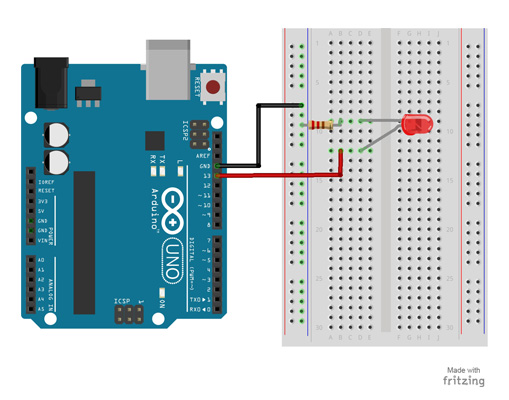
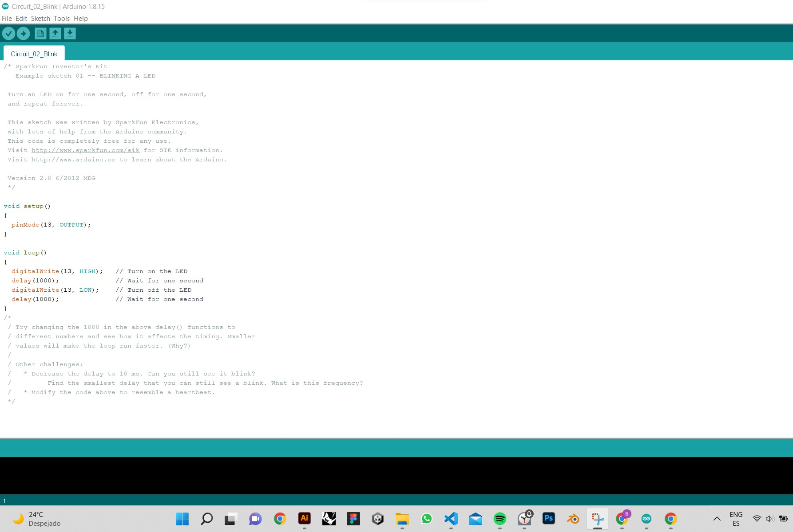

this weeks task, we had to use our programmer to program a circuit with an LED. As this class was in the same time frame as design dialogue preparation, I decided to simple circuit that applies what I learnt during the local class
From Ideas to code
In the Local class, we learnt that flow charts help ideate ideas into a working circuit. Here we learnt in Arduino, statments manage how the program reacts
Some notes on Microcontrollers:
Blink an LED project
For my project, I used an Arduino UNO ( As I do not own an ESP32) to blink an LED. On a breadboard I compiled a circuit where the LED should turn on for a second and off for a second in a loop.
Parts Needed:
Project Code:

this is the diagram of the circuit I wanted to make

This is a screenshot of the arduino circuit code for the LED
Image of components needed for the circuit
Explanation of the code: